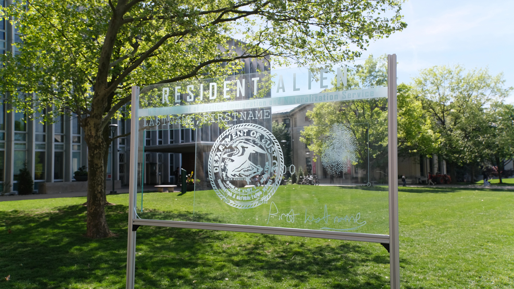
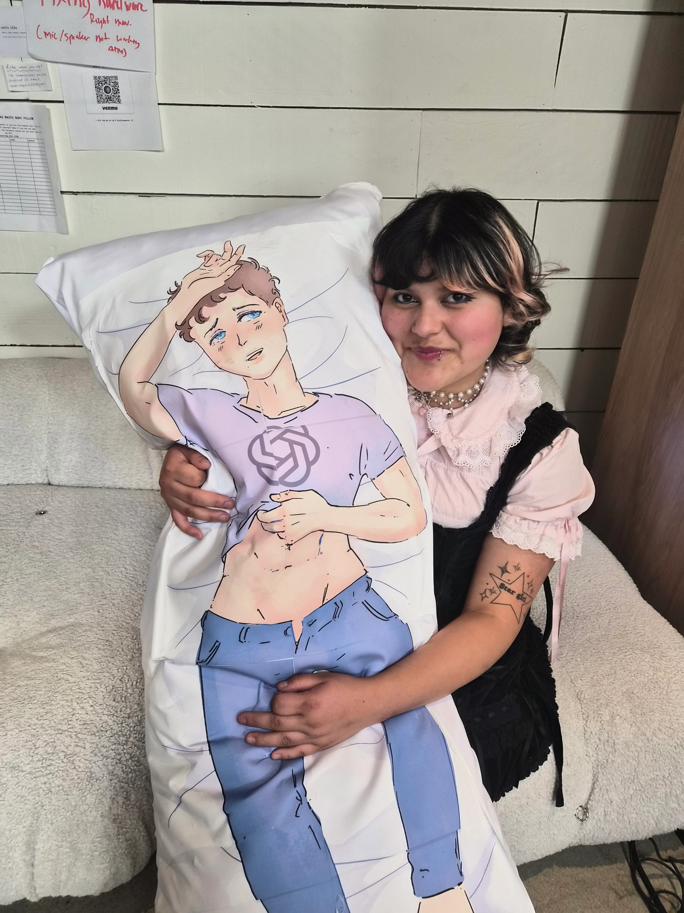
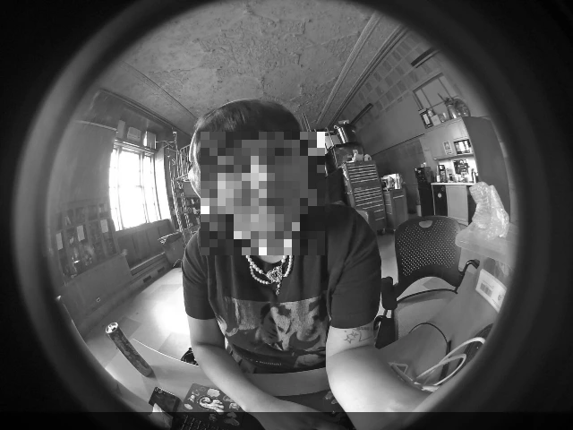
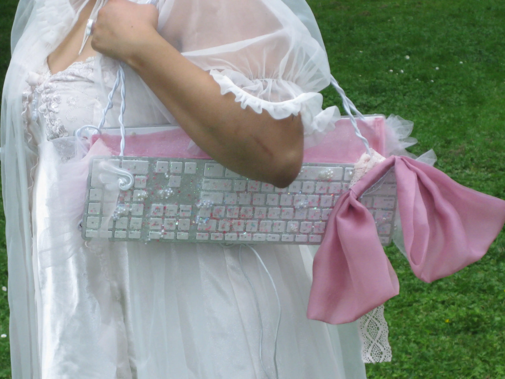
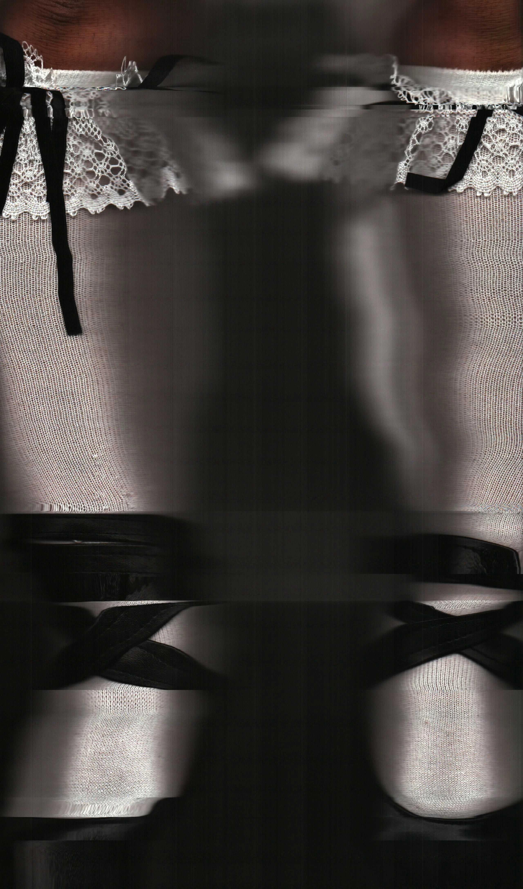
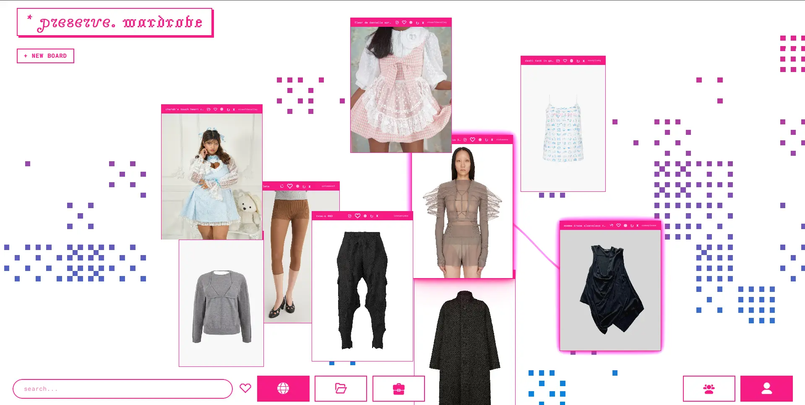
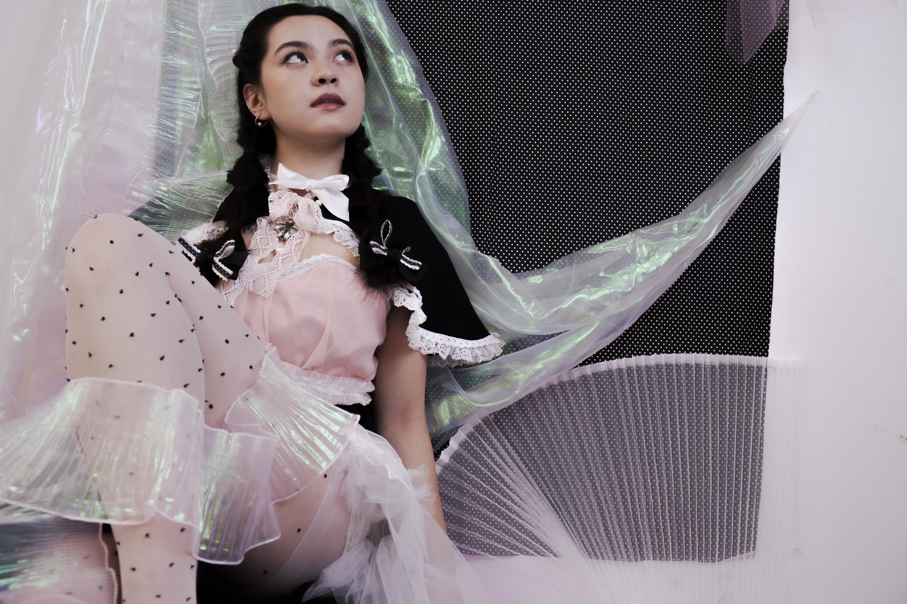
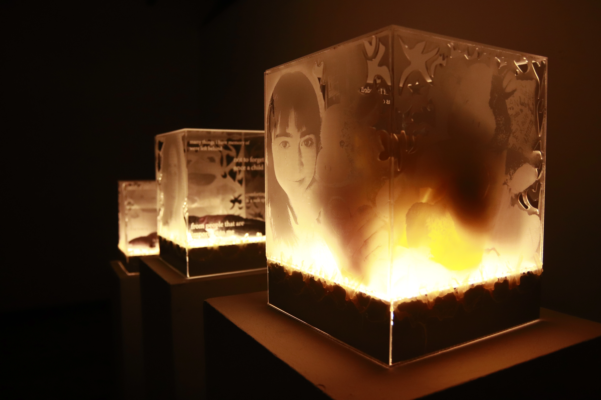
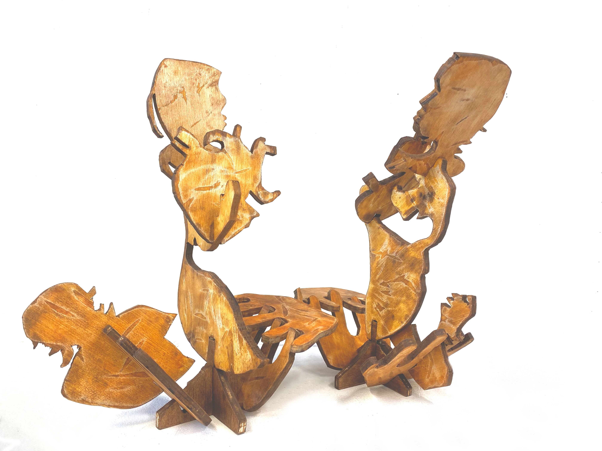

real american
(done)
This piece is dedicated to immigrants—too often rendered invisible
in the American narrative. The green card, while symbolizing legal
residency, still carries the label "resident alien," a term that
strips individuals of humanity and reinforces the idea they will
never be seen as truly American.
dehumanization of databases
(in-progress)
This paper examines the structural role of absent and incomplete
data within the U.S. Immigration and Customs Enforcement (ICE)
arrest database as a deliberate mechanism of dehumanization and
institutional erasure. Through close reading of database
architecture and legal terminology, this paper argues that the
absence of data strings in ICE records is not incidental
mismanagement but a purposeful tactic: one that obscures the scope
of enforcement, limits public accountability, and furthers the
systemic erasure of immigrant lives from institutional record.

ceo wAIfus
(in-progress)
its a meme for most, but all seriousness it was supposed to be a
critique of our closeness with ai agents. how in this current era,
people have become accustomed to trust their agents with personal
information, using it as a therapist or even a romantic partner. i
wanted to push its absurdity, and use humor as a form of critique.
ai has become so infiltrated into our society, that the idea of you
actually sleeping with it, talking to it seems ridiculously but is
actually the direction of where ai is heading. instead of creating a
version of the ai agent, which is usually feminized. I wanted to put
the people in the forefront of the company--the CEOs. at the end of
the day, majority of your support and money is going to the person
who holds the most stake at the company.

security camera selfies
(done)

rip computer angel
(done)

scan captures
(done)

perserve.wardrobe
(in-progress)

dreamscape
(in-progress)

reminiscence
(done)
This work revolves around memory—specifically how our memories
evolve over time, particularly with sentimental items we've lost
over the years. In these interviews, I ask my friends to recall a
childhood plushie and describe it from memory. I recreate the
plushie based on their descriptions and recollection. Each plushie
was handmade, serving as an extension of my love for these friends.
Our material objects are an extension of ourselves. Sometimes the
material object is all that we have left. And it the only thing that
we can attach as humans. Memory becomes intertwined with the object
itself

connections of love
(done)
Exploring different connections of love through a queer lens